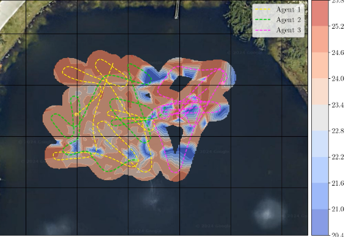
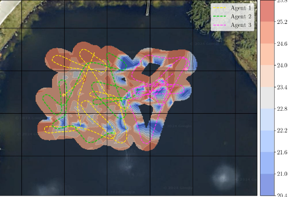

DyConRIG: Dynamic Consensus for Robotic Information Gathering
DyConRIG is a distributed multi-robot information gathering system that employs a consensus-based control strategy to efficiently map environmental fields. By integrating a modified Hegselmann-Krause model, it enables robots to balance local and shared information, prioritizing uncertainty-driven sampling of informative locations. Validated through simulations and real-world experiments, DyConRIG achieves robust, scalable, and efficient environmental monitoring with asynchronous robot coordination.
 
